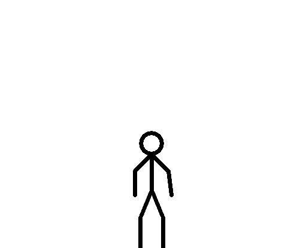
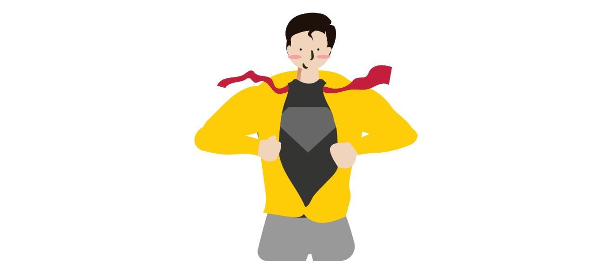
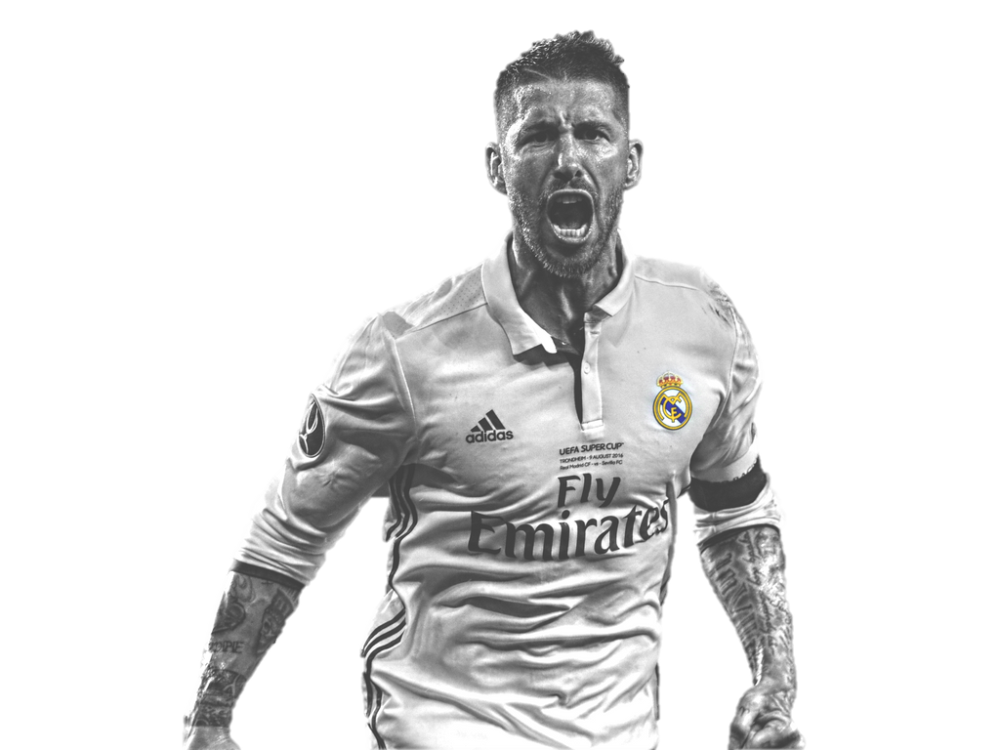

Profil

Perkenalkan nama saya Muhammad Syaiful Rahman, sebuah nama yang diberikan oleh kedua orangtua saya,
namun saya pun baru mengetahui makna atau arti nama tersebut ketika duduk di bangku SMP,
yang artinya pedang utusan yang penuh dengan kasih sayang.
Saya lahir di Jakarta pada tanggal 12 Mei 2001 dan dilahirkan di rumah sakit ternama di Jakarta yaitu RS. Cipto Mangunkusumo.
Saya merupakan anak pertama dari dua bersaudara. Berat badan saya saat ini yaitu 64 kg dan tinggi badan saya 175 cm.
Hobi saya yaitu bermain bola, bermain musik, dan saya sangat suka menulis dan menggambar.
Selain itu, saya juga suka menyaksikan pertandingan sepak bola baik di televisi maupun menonton secara langsung di stadion.
Sehari-hari saya biasa dipanggil Ipul atau Pul. Ibu dan ayah saya berasal dari keluarga suku sunda, maka bahasa sehari-harinya pun terkadang memakai bahasa sunda.
ketika masa kecil, saya menghabiskan masa itu di daerah Kabupaten Bogor yaitu di Perumahan Bukit Sakinah.
Awal pendidikan saya bersekolah di Madrasah Muhammadiyah Bogor,
lalu saya dan keluarga memutuskan untuk berpindah ke Jakarta dikarenakan kakek saya mengalami penurunan kesehatan
walaupun pada akhirnya pada 6 Januari 2014 kakek saya meninggal di kediamannya, dan hari itu juga bertepatan dengan hari lahirnya ayah saya.
Sungguh hal yang sangat menyedihkan yang sulit untuk dilupakan tentunya. Di Jakarta, saya bersekolah di SMP Negeri 52 Jakarta di daerah Cipinang Elok Jakarta Timur.
Lalu, saya dan keluarga memutuskan untuk pindah ke Cimanggis, Kota Depok dikarenakan ayah saya membeli rumah di daerah tersebut.
Saya pun melanjutkan pendidikan saya di SMA Negeri 1 Cibinong dan saat ini saya melanjutkan kuliah di Telkom University, Kota Bandung.
Potensi Diri
1. Menggambar Sesuatu dalam Bentuk Sketsa.
Di waktu luang saya selalu menggambar sesuatu dalam bentuk sketsa.
Biasanya saya suka menggambar sketsa suatu karakter seperti publik figur, karakter kartun, dan pesepak bola.
Dengan potensi tersebut, suatu saat saya bisa menjadi pelukis handal, atau animator.
2. Menulis dengan Baik dan Rapih.
Ketika duduk di bangku SD, saya selalu dituntut oleh orang tua saya untuk selalu rapih dalam menulis.
Pada saat itu, saya tidak menyukai menulis. Berkat kedua orang tua saya, saat ini saya sangat hobi menulis,
dan tentunya dengan tulisan yang baik dan rapih.
Dengan potensi tersebut, suatu saat saya bisa menjadi penulis buku, author, dan lain sebagainya
yang akan saya jadikan pekerjaan dengan potensi diri yang ada.
3. Bermain Alat Musik dengan Berbagai Genre dan Instrumen Musik.
Di waktu senggang atau hari libur saya sering menginstrumenkan musik dalam berbagai genre mengingat orang tua saya
sangat menyukai musik sejak kecil.
Tentunya orang tua saya selalu mengajarinya sampai benar-benar mahir.
Dengan potensi tersebut, suatu saat saya bisa menjadi musisi, produser musik dan lain sebagainya.
4. Mengolah Foto atau Video dengan Suatu Aplikasi.
Selain bermain game, ketika bermain komputer ataupun laptop saya sangat sering untuk mengedit video ataupun foto
agar menjadi foto atau video yang menarik. Dengan potensi tersebut, suatu saat saya bisa menjadi video editor handal.
Minat dan Bakat
Saya memiliki minat di bidang teknologi, dan sangat menyukai hal yang berkaitan dengan digital
seperti menjadi video editor, animator.
Terkait dengan kelebihan saya yang mampu berbaur dengan banyak orang dan mampu bekerja sama,
bukan tidak mungkin saya akan menjadi seorang manajer dalam suatu perusahaan.
Karena seorang manajer dituntut untuk mengarahkan, memadukan, mengawasi
dan mengkoordinasikan pekerjaan-pekerjaan yang dilakukan oleh anggota organisasi yang lain.
Selain itu, saya juga menyukai hal yang berbau musik, seperti contohnya menjadi musisi, musik produser, atau penulis lagu.
Jika dikaitkan dengan hobi saya seperti menulis atau menggambar sketsa dan menyukai hal digitalisasi,
bukan tidak mungkin suatu saat saya akan menjadi penulis buku digital dan pelukis handal.
Selain itu, saya memiliki bakat di bidang musik, editing, menulis, menggambar, dan berorganisasi.
Kelebihan Diri

1. Selalu Rapih dan Bersih Dalam Mengerjakan Sesuatu.
Menurut saya, kerapihan dan kebersihan sangat berperan penting dalam menyelesaikan tugas atau hal lainnya,
dengan tingkat kerapihan yang tinggi tentunya menentukan tingkat kualitas hasil pekerjaan seseorang.
Saya selalu merasa seperti ada yang kurang jika mengerjakan tugas atau sesuatu tetapi tidak diikuti dengan kerapihan dan kebersihan.
2. Dapat Bekerja dalam Suatu Tim.
Ketika duduk di bangku SMA, saya pernah menjabat sebagai ketua divisi humas Rohis
dan pernah dipercayai untuk menjadi ketua acara kegiatan rihlah. Walaupun masih banyak kekurangannya,
akan tetapi saya memiliki pengalaman bekerja dalam tim dan mampu bekerja sama dalam suatu tim
untuk menyelesaikan suatu pekerjaan yang bersifat kelompok.
3. Dapat Menginstrumenkan Musik.
Di waktu senggang atau hari libur saya sering menginstrumenkan musik dalam berbagai genre
mengingat orang tua saya sangat menyukai musik sejak kecil.
Tentunya orang tua saya selalu mengajari saya dalam memainkan alat musik
dan sampai saat ini saya masih menyukai segala hal yang berkaitan dengan musik.
4. Pemaaf.
Sifat pemaaf adalah sifat suka memaafkan kesalahan orang lain tanpa sedikit pun ada rasa benci
dan keinginan untuk membalas. Walaupun saya terkadang merasa kesal terhadap seseorang yang berbuat salah terhadap saya,
saya merupakan seseoang yang tidak tega jika berbuat semena-mena terhadap orang yang berbuat salah terhadap saya.
5. Lebih Suka Berbaur dengan Orang Banyak.
Saya lebih suka mengobrol dan melakukan kegiatan dengan banyak orang dibandingkan dengan seorang diri atau menyendiri.
Karena bekerja secara berkelompok lebih menyenangkan, lebih cepat selesai dan lebih banyak referensi jika dibandingkan
dengan mengerjakan secara individu.
Kekurangan Diri

1. Terkadang kurang percaya diri.
Percaya diri adalah sebuah situasi, dimana pikiran dan perasaan kita merasa yakin pada diri kita sendiri.
Hal yang membuat yakin tadi ditimbulkan oleh visualisasi dari apa yang dilakukan.
Saya pun terkadang merasa tidak percaya diri bukan tanpa alasan, ada beberapa faktornya
seperti kurang persiapan, ingin perfeksionis dan terkadang saya selalu membandingkan diri saya dengan orang lain
yang membuat hilangnya rasa percaya diri dalam diri saya.
2. Kurang teliti.
Ketelitian tentunya sangat diperlukan dalam menyelesaikan suatu pekerjaan. Dalam hal ketelitian,
saya bisa dikatakan masih kurang dalam hal ini.
Seperti contohnya mengerjakan soal-soal ujian yang bersifat hitungan atau yang bersifat butuh keakuratan 100%
seperti mengoding terkadang masih ada beberapa kesalahan-kesalahan kecil yang sebaiknya tidak perlu dilakukan.
Maka dari itu saya sering berlatih meningkatkan konsentrasi
untuk meningkatkan ketelitian saya dalam mengerjakan pekerjaan atau tugas.
3. Terkadang bergantung kepada orang lain.
Saya merupakan orang yang lebih memilih mengerjakan tugas atau sesuatu secara berkelompok daripada individu.
Dari hal itu, terkadang saya masih mengandalkan atau bergantung kepada orang lain.
4. Malas dalam keadaan tertentu.
Rasa malas terkadang muncul dari minimnya motivasi dalam diri.
Saya selalu malas jika mengerjakan sesuatu tanpa adanya motivasi dari dalam diri maupun dari luar.
Selain faktor kurangnya motivasi, faktor kelelahan juga membuat saya terkadang malas dalam berkegiatan.
Idola

Sergio Ramos merupakan pesepakbola profesional berkebangsaan Spanyol yang saat ini bermain bersama klub asal negara Prancis
yaitu Paris Saint Germain. Ia pernah menjuarai piala dunia 2010 bersama timnas Spanyol
dan pernah meraih 3 kali juara berturut-turut liga Champions bersama Real Madrid
dan masih banyak lagi prestasi-prestasi yang pernah diraihnya.
Alasan saya mengidolakannya karena ia merupakan sosok yang pemberani, pekerja keras dan memiliki jiwa kepemimpinan tinggi.
Di atas lapangan, Sergio Ramos selalu menjadi momok menakutkan bagi striker klub lawan.
Selain itu, Sergio Ramos juga dikenal sebagai sosok yang pemberani dan memiliki jiwa kepemimpinan yang tinggi.
Tidak heran jika sampai saat ini Sergio Ramos selalu menjadi kapten tim, baik kapten di level klub maupun kapten di level timnas.